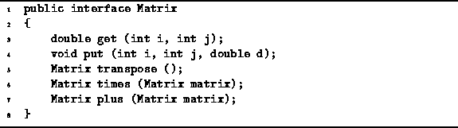

Data Structures and Algorithms
with Object-Oriented Design Patterns in Java
Data Structures and Algorithms
with Object-Oriented Design Patterns in JavaMulti-dimensional arrays of floating-point numbers arise in many different scientific computations. Such arrays are usually called matrices . Mathematicians have studied the properties of matrices for many years and have developed an extensive repertoire of operations on matrices. In this section we consider two-dimensional matrices of doubles and examine the implementation of simple, matrix multiplication.
The preceding sections show that there are many possible
ways to implement matrices.
In order to separate interface from implementation,
we define the Matrix interface shown in Program  .
.

Program: Matrix interface.
This interface defines methods for accessing the elements of a matrix, (get and put) and methods for some of the elementary operations on matrices such as computing the transpose of a matrix (transpose), adding matrices (plus), and multiplying matrices (times).
 Copyright © 1998 by Bruno R. Preiss, P.Eng. All rights reserved.
Copyright © 1998 by Bruno R. Preiss, P.Eng. All rights reserved.